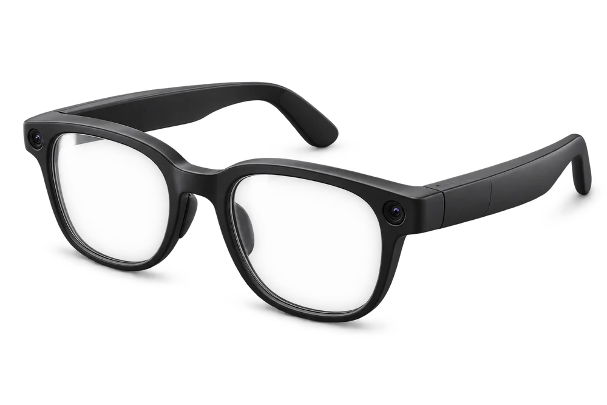

带上新品，
走出第一步。
以旅行记录为演示假设：买家想留下片段，又不想频繁举手机。真实产品能否做到、限制在哪里，先由品牌确认。
交到合作台上：产品事实单联野 · AI 时代的新品起销网络
走出 Demo，
走到会买的人面前。

01 / 新品去哪里卖
走进门店，进入内容，
也来到有共同需求的人群里。

AI 新零售 / 专业门店
把新品放进合适的门店，让买家上手、提问、比较，再走向清楚的购买选择。
在这条路径，可以怎样合作
准备展示样机、店员演示与品牌服务说明，先确定一处适合长期介绍产品的位置。
让兴趣，走向一次明确的选择
样机 · 演示范围 · 服务说明
品牌提供展示样机与可确认的产品事实。
路径为预设示意。品牌原则上承接成交与履约；具体零售、导流或分佣方式，需与经营者另行约定。
可以探索的市场通路
这一组合暂未找到参考入口。试试其他方向，或清除关键词。
公开市场通路参考，不代表联野已合作或已获准入。社群与会员入口不等于可调用的私域销量；具体合作需逐项确认。查看资料来源 ↗
02–03 / 从产品，到一次具体合作
以一副无品牌 AI 眼镜为例。
看看品牌、伙伴和联野各做什么。
预设合作情境：假设眼镜用于第一视角旅行记录 · 不代表真实产品能力、实时 AI 或交易

旅行记录
买家问题
实际能力待确认
AI 辅助整理 人工确认后推进
先试门店：佩戴与操作，需要亲自试。
示意形式：预约体验
试戴 → 尝试操作 → 查看原片
预设任务，实际可演示范围由品牌确认伙伴与联野的实际服务及贡献，
按合作前约定记录、归因与结算。
需求、服务与投入条件成立后，再讨论扩大；缺少实际记录时，不把兴趣当成可复制增长。
从样机、买家与交付条件开始，先确认这是一款怎样的产品。
以旅行记录为演示假设：买家想留下片段，又不想频繁举手机。真实产品能否做到、限制在哪里，先由品牌确认。
交到合作台上：产品事实单佩戴与操作要亲自试，所以先讨论门店体验。联野把买家问题变成体验提纲，AI辅助整理，人确认可演示范围。
交到合作台上：合作准备稿伙伴了解自己的受众与空间。双方把形式、支持、服务和收益条件谈清楚，联野推进协作。
交到合作台上：一次合作的安排内容、试用或到店体验，把参数变成具体感受。先听问题，再看是否出现购买意愿。
交到合作台上：体验与答疑品牌原则上承接咨询、订单与履约。伙伴与联野的贡献按事先约定处理，不建立多级代理。
交到合作台上：清楚的成交与服务路径结合需求、成交与实际投入，决定继续、调整或停止。成立的条件，才值得带到下一个场景。
交到合作台上：结果复盘与下一步建议先把一次具体合作做扎实。
再寻找值得复制的下一站。
04 / 一起把新生意做起来
找到值得先试的销售路径，准备合作材料、样机与体验安排，直接承接自己的买家。
带一款产品来聊聊 ↗找到适合自己经营方式的新品，拿到清晰的演示与品牌支持，按实际服务和约定贡献获得收益。
聊聊你的受众或空间 ↗按项目范围，形成优先销售路径与候选入口建议、合作准备材料与推进记录、首轮体验或试销安排，以及结果复盘和下一步建议。Demo 阶段先体验与需求反馈；具备合规与交付条件后，再约定首销。
按实际服务范围约定服务费；涉及成交或增量价值时，先明确归因、退款处理、费用上限和结算周期。当前没有经过验证的统一价格、销量或收益承诺。
联野处于首批合作验证阶段。AI 用于辅助资料整理、场景比较与材料准备，人确认事实并推动合作。页面演示由预设资料驱动；真实付费、销售表现、AI 效率增量、网络复用和增长效果仍需实际项目验证。
从一款产品，一个场景开始
第一次沟通，带上这几件事就好：